Simulating the Diffusion Decision Model (DDM)
Dogukan Nami Oztas
2025-05-16
Source:vignettes/02_simulating_diffusion_model.Rmd
02_simulating_diffusion_model.RmdIntroduction to the Diffusion Decision Model (DDM)
The Diffusion Decision Model (DDM) is a prominent mathematical model used in psychology and cognitive neuroscience to account for reaction times (RTs) and accuracy in two-alternative forced-choice (2AFC) decision tasks. It conceptualizes decision-making as a process of noisy evidence accumulation over time towards one of two decision boundaries.
The DDM is essentially a continuous-time version of the random walk model we explored in the previous vignette. Instead of discrete steps, evidence is assumed to accumulate continuously, influenced by both a systematic “drift” (reflecting the quality of stimulus information) and random “noise” (reflecting moment-to-moment variability in processing).
Why Use the DDM?
The DDM is particularly valuable because it:
- Jointly explains accuracy and RT: Unlike models that treat these separately, the DDM provides a unified account
- Captures individual differences: Parameters can vary across participants and conditions
- Has strong theoretical foundation: Based on optimal decision-making principles
- Provides mechanistic insights: Links behavioral data to underlying cognitive processes
Mathematical Foundation
The DDM is mathematically described by a stochastic differential equation:
Where: - is the evidence state at time - is the drift rate (systematic accumulation) - is the diffusion coefficient (noise) - is a Wiener process increment
This vignette will demonstrate how to simulate the DDM using the
functions created in R/02_ddm_simulator_basic.R.
Key DDM Parameters
Our DDM simulator, simulate_diffusion_trial(), uses the
Feller (1968) convention, where evidence accumulates between a lower
boundary at 0 and an upper boundary at
.
Parameter Descriptions
-
v (Drift Rate):
- The average rate of evidence accumulation per unit time
- Positive indicates drift towards the upper boundary
- Negative indicates drift towards the lower boundary 0
- Magnitude reflects stimulus discriminability: signal strength
- Typical range: -2 to +2 (in standardized units)
-
a (Threshold Separation):
- Distance between decision boundaries (0 and )
- Controls the speed-accuracy tradeoff
- Higher → slower, more accurate responses
- Lower → faster, less accurate responses
- Typical range: 0.5 to 2.5
-
z (Starting Point):
- Initial evidence state:
- : unbiased starting point
- : bias toward upper boundary
- : bias toward lower boundary
- Typical range: from 0.3 to 0.7
-
s (Noise/Diffusion Coefficient):
- Standard deviation of moment-to-moment variability
- Often fixed to 0.1 for parameter scaling
- Higher increases RT variability
- Typical value: 0.1 (fixed)
-
ter (Non-Decision Time):
- Time for encoding and motor processes
- Added to decision time for total RT
- Typical range: 0.1 to 0.5 seconds
-
dt (Time Step):
- Simulation granularity for Euler-Maruyama approximation
- Smaller → higher accuracy, longer computation
- Recommended: 0.001 to 0.01 seconds
Simulating a Single DDM Trial
The simulate_diffusion_trial() function simulates one
instance of the evidence accumulation process.
set.seed(102) # For reproducibility
# Example 1: Positive drift, unbiased start
trial_A <- simulate_diffusion_trial(v = 0.2, a = 1.0, z = 0.5, s = 0.1, ter = 0.15)
cat("Trial A: Choice =", trial_A$choice, "(1=Upper, 0=Lower), RT =", round(trial_A$rt, 3), "s\n")## Trial A: Choice = 1 (1=Upper, 0=Lower), RT = 2.119 s
# Example 2: Negative drift, biased towards upper
trial_B <- simulate_diffusion_trial(v = -0.2, a = 1.0, z = 0.7, s = 0.1, ter = 0.15)
cat("Trial B: Choice =", trial_B$choice, ", RT =", round(trial_B$rt, 3), "s\n")## Trial B: Choice = 0 , RT = 3.553 s
# Example 3: No drift, unbiased start
trial_C <- simulate_diffusion_trial(v = 0.0, a = 1.0, z = 0.5, s = 0.1, ter = 0.15)
cat("Trial C: Choice =", trial_C$choice, ", RT =", round(trial_C$rt, 3), "s\n")## Trial C: Choice = NA , RT = NA s
# Example 4: High threshold (conservative)
trial_D <- simulate_diffusion_trial(v = 0.2, a = 1.8, z = 0.9, s = 0.1, ter = 0.15)
cat("Trial D: Choice =", trial_D$choice, ", RT =", round(trial_D$rt, 3), "s\n")## Trial D: Choice = 1 , RT = 4.235 sInterpretation: - Trial A: Positive drift should favor upper boundary (choice = 1) - Trial B: Despite negative drift, high starting point might still reach upper boundary - Trial C: With no systematic drift, choice depends purely on noise - Trial D: High threshold leads to longer, more accurate decisions
Understanding Parameter Effects Through Simulation
Let’s systematically explore how each parameter affects DDM behavior:
Effect of Drift Rate (v)
set.seed(1001)
drift_rates <- c(-0.3, -0.1, 0, 0.1, 0.3)
n_trials_per_condition <- 500
# Simulate data for different drift rates
drift_results <- data.frame()
for(v in drift_rates) {
sim_data <- simulate_diffusion_experiment(
n_trials = n_trials_per_condition,
v = v, a = 0.7, z = 0.35, s = 0.2, ter = 0.1
)
sim_data$drift_rate <- v
drift_results <- rbind(drift_results, sim_data)
}
# Remove any NA trials
drift_results <- drift_results %>% filter(!is.na(choice))
# Plot 1: Choice proportions by drift rate
p1 <- drift_results %>%
group_by(drift_rate) %>%
summarise(prop_upper = mean(choice == 1), .groups = 'drop') %>%
ggplot(aes(x = drift_rate, y = prop_upper)) +
geom_point(size = 3, color = "steelblue") +
geom_line(linewidth = 1, color = "steelblue") +
geom_hline(yintercept = 0.5, linetype = "dashed", color = "red") +
labs(title = "Choice Probability vs. Drift Rate",
x = "Drift Rate (v)", y = "P(Upper Boundary)") +
theme_minimal()
# Plot 2: Mean RT by drift rate and choice
p2 <- drift_results %>%
group_by(drift_rate, choice) %>%
summarise(mean_rt = mean(rt), .groups = 'drop') %>%
ggplot(aes(x = drift_rate, y = mean_rt, color = factor(choice))) +
geom_point(size = 3) +
geom_line(linewidth = 1) +
scale_color_manual(values = c("0" = "salmon", "1" = "steelblue"),
labels = c("Lower", "Upper"),
name = "Boundary") +
labs(title = "Mean RT vs. Drift Rate",
x = "Drift Rate (v)", y = "Mean RT (s)") +
theme_minimal()
# Combine plots
grid.arrange(p1, p2, ncol = 1)
Key Observations: - Higher drift rates increase accuracy (choice probability) - RTs are typically faster for choices in the direction of drift - The relationship between drift rate and choice follows a sigmoid (psychometric) function
Effect of Threshold (a)
set.seed(1002)
thresholds <- c(0.4, 0.6, 0.8, 1.0, 1.2, 1.4, 1.6)
threshold_results <- data.frame()
for(a in thresholds) {
sim_data <- simulate_diffusion_experiment(
n_trials = n_trials_per_condition,
v = 0.15, a = a, z = a/2, s = 0.25, ter = 0.1 # Keep z proportional to a
)
sim_data$threshold <- a
threshold_results <- rbind(threshold_results, sim_data)
}
threshold_results <- threshold_results %>% filter(!is.na(choice))
# Plot accuracy and mean RT vs threshold
p3 <- threshold_results %>%
group_by(threshold) %>%
summarise(accuracy = mean(choice == 1), .groups = 'drop') %>% # Assuming v > 0, so upper is "correct"
ggplot(aes(x = threshold, y = accuracy)) +
geom_point(size = 3, color = "darkgreen") +
geom_line(linewidth = 1, color = "darkgreen") +
labs(title = "Accuracy vs. Threshold",
x = "Threshold (a)", y = "Accuracy") +
theme_minimal()
p4 <- threshold_results %>%
group_by(threshold) %>%
summarise(mean_rt = mean(rt), .groups = 'drop') %>%
ggplot(aes(x = threshold, y = mean_rt)) +
geom_point(size = 3, color = "purple") +
geom_line(linewidth = 1, color = "purple") +
labs(title = "Mean RT vs. Threshold",
x = "Threshold (a)", y = "Mean RT (s)") +
theme_minimal()
grid.arrange(p3, p4, ncol = 2)Key Observations: - Higher thresholds lead to higher accuracy but longer RTs - This demonstrates the fundamental speed-accuracy tradeoff in decision-making
Using Utility Functions for Parameter Exploration
Our enhanced DDM package includes utility functions that make parameter exploration more systematic and efficient:
# Create a parameter grid for systematic exploration
param_grid <- create_parameter_grid(
v_values = c(0.1, 0.2, 0.3),
a_values = c(0.8, 1.0, 1.2),
z_values = c(0.4, 0.5, 0.6),
z_as_proportion = FALSE # Use absolute z values
)
# Display first few parameter combinations
knitr::kable(head(param_grid), caption = "Example Parameter Grid for Systematic Exploration")| v | a | z | s | ter | param_set |
|---|---|---|---|---|---|
| 0.1 | 0.8 | 0.4 | 0.1 | 0.1 | set_1 |
| 0.2 | 0.8 | 0.4 | 0.1 | 0.1 | set_2 |
| 0.3 | 0.8 | 0.4 | 0.1 | 0.1 | set_3 |
| 0.1 | 1.0 | 0.4 | 0.1 | 0.1 | set_4 |
| 0.2 | 1.0 | 0.4 | 0.1 | 0.1 | set_5 |
| 0.3 | 1.0 | 0.4 | 0.1 | 0.1 | set_6 |
# Create organized parameter objects
easy_params <- create_ddm_params(v = 0.3, a = 1.0, z = 0.5, name = "Easy Condition")
hard_params <- create_ddm_params(v = 0.1, a = 1.0, z = 0.5, name = "Hard Condition")
print(easy_params)## DDM Parameters: Easy Condition
## Drift rate (v): 0.3
## Threshold (a): 1
## Starting point (z): 0.5 (z/a = 0.500)
## Noise (s): 0.1
## Non-decision time (ter): 0.1
## Time step (dt): 0.001
## Max decision time: 5
print(hard_params)## DDM Parameters: Hard Condition
## Drift rate (v): 0.1
## Threshold (a): 1
## Starting point (z): 0.5 (z/a = 0.500)
## Noise (s): 0.1
## Non-decision time (ter): 0.1
## Time step (dt): 0.001
## Max decision time: 5Simulating a DDM Experiment
To understand the model’s predictions for RT distributions and choice
probabilities, we simulate many trials using
simulate_diffusion_experiment().
set.seed(202)
n_sim_trials <- 2000 # Use a good number of trials for smooth distributions
# Define a set of parameters
params <- list(
v = 0.1, # Moderate positive drift
a = 0.7, # Threshold
z = 0.35, # Unbiased start (a/2)
s = 0.2, # Standard noise
ter = 0.2, # Non-decision time
dt = 0.01 # Time step (higher precision)
)
ddm_data <- simulate_diffusion_experiment(
n_trials = n_sim_trials,
v = params$v,
a = params$a,
z = params$z,
s = params$s,
ter = params$ter,
dt = params$dt
)
# Display the first few rows
knitr::kable(head(ddm_data, 10), digits = 3,
caption = "First 10 trials of the simulated DDM experiment.")| trial | choice | rt | decision_time |
|---|---|---|---|
| 1 | 1 | 0.83 | 0.63 |
| 2 | 1 | 1.73 | 1.53 |
| 3 | 0 | 3.63 | 3.43 |
| 4 | 1 | 2.85 | 2.65 |
| 5 | 1 | 1.39 | 1.19 |
| 6 | 1 | 1.58 | 1.38 |
| 7 | 0 | 1.23 | 1.03 |
| 8 | NA | NA | NA |
| 9 | 1 | 4.99 | 4.79 |
| 10 | 1 | 4.90 | 4.70 |
# Summary of the data using our utility function
summary_table <- create_summary_table(ddm_data, correct_response = 1)
knitr::kable(summary_table, caption = "Comprehensive Summary of DDM Simulation Results")| Statistic | Value |
|---|---|
| Total Trials | 2000.000 |
| Valid Trials | 1763.000 |
| Timeout Rate (%) | 11.850 |
| Overall Accuracy | 0.853 |
| Mean RT (s) | 2.290 |
| Median RT (s) | 2.070 |
| RT SD (s) | 1.162 |
| RT Skewness | 0.189 |
| Choice 0 Proportion | 0.147 |
| Choice 1 Proportion | 0.853 |
Analyzing DDM Experiment Results
1. Choice Proportions and Accuracy
# Filter out NA choices (if max_decision_time was hit)
valid_ddm_choices <- na.omit(ddm_data$choice)
choice_counts_ddm <- table(valid_ddm_choices)
choice_proportions_ddm <- prop.table(choice_counts_ddm)
cat("Choice Counts:\n")## Choice Counts:
print(choice_counts_ddm)## valid_ddm_choices
## 0 1
## 260 1503
cat("\nChoice Proportions:\n")##
## Choice Proportions:
knitr::kable(as.data.frame(choice_proportions_ddm),
col.names = c("Choice", "Proportion"),
caption = "DDM Choice Proportions")| Choice | Proportion |
|---|---|
| 0 | 0.1474759 |
| 1 | 0.8525241 |
# Create a more informative bar plot
choice_df <- data.frame(
Boundary = c("Lower (0)", "Upper (1)"),
Proportion = as.numeric(choice_proportions_ddm),
Count = as.numeric(choice_counts_ddm)
)
ggplot(choice_df, aes(x = Boundary, y = Proportion, fill = Boundary)) +
geom_col(alpha = 0.8, color = "black") +
geom_text(aes(label = paste0(round(Proportion*100, 1), "%\n(n=", Count, ")")),
vjust = -0.5, size = 4) +
scale_fill_manual(values = c("salmon", "steelblue")) +
labs(title = paste("Choice Proportions (v =", params$v, ")"),
x = "Decision Boundary", y = "Proportion") +
theme_minimal() +
theme(legend.position = "none") +
ylim(0, max(choice_df$Proportion) * 1.2)
Expected Result: With positive drift (v = 0.1), we expect more choices for the upper boundary (Choice 1), which we observe as 85.3% of trials.
2. Reaction Time (RT) Distributions
The DDM is well-known for predicting positively skewed RT distributions - a hallmark of decision-making data.
# Filter out NA RTs
valid_ddm_rt_data <- ddm_data %>% filter(!is.na(rt))
if(nrow(valid_ddm_rt_data) > 0) {
# Create comprehensive RT analysis
# Plot 1: Decision time distributions
p_decision <- ggplot(valid_ddm_rt_data, aes(x = decision_time, fill = factor(choice))) +
geom_histogram(binwidth = 0.02, alpha = 0.7, position = "identity", color = "black") +
facet_wrap(~factor(choice, labels = c("Lower Boundary (0)", "Upper Boundary (1)"))) +
scale_fill_manual(values = c("salmon", "steelblue")) +
labs(title = "Decision Time Distributions",
x = "Decision Time (s)", y = "Frequency", fill = "Choice") +
theme_minimal() +
theme(legend.position = "none")
# Plot 2: Total RT distributions
p_total <- ggplot(valid_ddm_rt_data, aes(x = rt, fill = factor(choice))) +
geom_histogram(binwidth = 0.02, alpha = 0.7, position = "identity", color = "black") +
facet_wrap(~factor(choice, labels = c("Lower Boundary (0)", "Upper Boundary (1)"))) +
scale_fill_manual(values = c("salmon", "steelblue")) +
labs(title = "Total RT Distributions (Decision Time + Non-Decision Time)",
x = "Total RT (s)", y = "Frequency", fill = "Choice") +
theme_minimal() +
theme(legend.position = "none")
grid.arrange(p_decision, p_total, ncol = 1)
# Summary statistics for RTs
rt_summary_ddm <- valid_ddm_rt_data %>%
group_by(choice) %>%
summarise(
N = n(),
Mean_RT = mean(rt),
Median_RT = median(rt),
SD_RT = sd(rt),
Min_RT = min(rt),
Max_RT = max(rt),
Skewness = (mean(rt) - median(rt)) / sd(rt), # Simple skewness measure
.groups = 'drop'
)
knitr::kable(rt_summary_ddm, digits = 3,
caption = "Summary Statistics for DDM RTs by Choice")
# Highlight the skewness
cat("\n=== Skewness Analysis ===\n")
cat("Positive skew (Mean > Median) indicates right-skewed distributions\n")
for(i in 1:nrow(rt_summary_ddm)) {
choice_val <- rt_summary_ddm$choice[i]
skew_val <- rt_summary_ddm$Skewness[i]
cat("Choice", choice_val, ": Skewness =", round(skew_val, 3),
ifelse(skew_val > 0, "(right-skewed)", "(left-skewed)"), "\n")
}
} else {
cat("No valid trials with RTs to plot (all may have hit max_decision_time).\n")
}
##
## === Skewness Analysis ===
## Positive skew (Mean > Median) indicates right-skewed distributions
## Choice 0 : Skewness = 0.134 (right-skewed)
## Choice 1 : Skewness = 0.204 (right-skewed)Key Observations: - Both distributions show positive skew (right tail), characteristic of DDM predictions - “Correct” responses (upper boundary, given positive drift) tend to be faster on average - The addition of non-decision time shifts the entire distribution rightward
Visualizing Evidence Accumulation Paths
To gain intuitive understanding of the DDM, let’s visualize actual evidence accumulation paths.
Individual Trial Paths
path_params <- list(
v = 0.1, # Moderate drift for interesting paths
a = 1.0, # Threshold
z = 0.5, # Unbiased start
s = 0.3, # Moderate noise for variability
dt = 0.01,
ter = 0.1
)
n_paths_to_plot <- 8 # More paths for better illustration
all_paths_data <- vector("list", n_paths_to_plot)
set.seed(343) # For reproducibility
for (i in 1:n_paths_to_plot) {
trial_with_path <- simulate_diffusion_trial_with_path(
v = path_params$v,
a = path_params$a,
z = path_params$z,
s = path_params$s,
dt = path_params$dt,
ter = path_params$ter
)
trial_with_path$path_data$trial_id <- paste("Trial", i)
trial_with_path$path_data$final_choice <- trial_with_path$choice
trial_with_path$path_data$final_rt <- trial_with_path$rt
all_paths_data[[i]] <- trial_with_path$path_data
}
plot_df_paths <- bind_rows(all_paths_data)
threshold_a <- path_params$a
if(nrow(plot_df_paths) > 0) {
ggplot(plot_df_paths, aes(x = time_s, y = evidence, group = trial_id,
color = factor(final_choice))) +
geom_line(alpha = 0.8, linewidth = 0.8) +
geom_hline(yintercept = 0, linetype = "dashed", color = "black", linewidth = 1) +
geom_hline(yintercept = threshold_a, linetype = "dashed", color = "black", linewidth = 1) +
geom_hline(yintercept = path_params$z, linetype = "dotted", color = "grey40", linewidth = 0.8) +
# Add drift line
geom_segment(aes(x = 0, y = path_params$z,
xend = max(time_s, na.rm = TRUE),
yend = path_params$z + path_params$v * max(time_s, na.rm = TRUE)),
color = "orange", linewidth = 1.5, linetype = "longdash",
inherit.aes = FALSE) +
annotate("text", x = max(plot_df_paths$time_s, na.rm = TRUE) * 0.95,
y = threshold_a + 0.05, label = paste("Upper boundary (a =", threshold_a, ")"),
hjust = 1, size = 3.5, fontface = "bold") +
annotate("text", x = max(plot_df_paths$time_s, na.rm = TRUE) * 0.95,
y = -0.05, label = "Lower boundary (0)",
hjust = 1, size = 3.5, fontface = "bold") +
annotate("text", x = 0.1, y = path_params$z + 0.08,
label = paste("Starting point (z =", path_params$z, ")"),
hjust = 0, size = 3.5, color = "grey40") +
annotate("text", x = max(plot_df_paths$time_s, na.rm = TRUE) * 0.6,
y = path_params$z + path_params$v * max(plot_df_paths$time_s, na.rm = TRUE) * 0.6 + 0.1,
label = paste("Average drift (v =", path_params$v, ")"),
hjust = 0.5, size = 3.5, color = "orange", fontface = "bold") +
scale_color_manual(values = c("0" = "salmon", "1" = "steelblue", "NA" = "grey"),
labels = c("0" = "Lower Boundary", "1" = "Upper Boundary", "NA"= "Timeout"),
name = "Trial Outcome") +
labs(title = "DDM Evidence Accumulation Paths",
subtitle = paste("Parameters: v =", path_params$v, ", a =", path_params$a,
", z =", path_params$z, ", s =", path_params$s),
x = "Decision Time (s)", y = "Accumulated Evidence") +
theme_minimal() +
theme(legend.position = "top",
plot.title = element_text(size = 14, face = "bold"),
plot.subtitle = element_text(size = 12))
} else {
cat("No path data to plot.\n")
}Comprehensive Path and RT Visualization
Our custom visualization function provides an integrated view of the decision process:
# Parameters for comprehensive visualization
path_plot_params <- list(
v = 0.08, # Moderate positive drift
a = 1.0,
z = 0.5, # Unbiased
s = 0.35, # Moderate noise
ter = 0.0, # Use 0 for cleaner decision time plots
dt = 0.01
)
n_example_paths <- 300 # Sufficient trials for good distributions
# Simulate the trials
set.seed(505)
example_trials_list <- vector("list", n_example_paths)
for (i in 1:n_example_paths) {
example_trials_list[[i]] <- simulate_diffusion_trial_with_path(
v = path_plot_params$v,
a = path_plot_params$a,
z = path_plot_params$z,
s = path_plot_params$s,
dt = path_plot_params$dt,
ter = path_plot_params$ter
)
}
# Check if we have enough valid trials
valid_trials <- sum(sapply(example_trials_list, function(x) !is.na(x$choice)))
cat("Generated", valid_trials, "valid trials out of", n_example_paths, "\n")## Generated 281 valid trials out of 300
if(valid_trials > 50) {
plot_ddm_paths_with_histograms(
trials_data_list = example_trials_list,
v_drift = path_plot_params$v,
z_start = path_plot_params$z,
a_threshold = path_plot_params$a,
hist_binwidth = 0.15,
max_time_to_plot = 6,
main_plot_title = paste("DDM Simulation: Paths and RT Distributions\n",
"v =", path_plot_params$v, ", a =", path_plot_params$a,
", z =", path_plot_params$z, ", s =", path_plot_params$s)
)
} else {
cat("Not enough valid trials with diverse outcomes to generate combined plot.\n")
}Interpretation: - Central panel: Shows evidence accumulation paths over time - Upper panel: Distribution of decision times for upper boundary choices - Lower panel: Distribution of decision times for lower boundary choices (flipped) - Orange line: Expected drift trajectory based on parameter - Dashed lines: Decision boundaries and starting point
Practical Applications and Model Fitting
Simulating Different Experimental Conditions
The DDM can model various experimental manipulations:
set.seed(2001)
# Define different experimental conditions
conditions <- list(
"Easy High Accuracy" = list(v = 0.4, a = 1.0, z = 0.5), # High drift
"Hard Low Accuracy" = list(v = 0.1, a = 1.0, z = 0.5), # Low drift
"Speed Emphasis" = list(v = 0.2, a = 0.8, z = 0.4), # Low threshold
"Accuracy Emphasis" = list(v = 0.2, a = 1.4, z = 0.7), # High threshold
"Response Bias" = list(v = 0.2, a = 1.0, z = 0.3) # Biased start
)
# Simulate each condition
condition_results <- data.frame()
condition_data_list <- list() # For plotting comparisons
for(cond_name in names(conditions)) {
cond_params <- conditions[[cond_name]]
sim_data <- simulate_diffusion_experiment(
n_trials = 400,
v = cond_params$v,
a = cond_params$a,
z = cond_params$z,
s = 0.3, ter = 0.2, dt = 0.001
)
sim_data$condition <- cond_name
condition_results <- rbind(condition_results, sim_data)
condition_data_list[[cond_name]] <- sim_data
}
# Remove NA trials and calculate summaries
condition_summary <- condition_results %>%
filter(!is.na(choice)) %>%
group_by(condition) %>%
summarise(
n_trials = n(),
accuracy = mean(choice == 1), # Assuming upper boundary is "correct"
mean_rt = mean(rt),
median_rt = median(rt),
rt_cv = sd(rt) / mean(rt), # Coefficient of variation
.groups = 'drop'
)
knitr::kable(condition_summary, digits = 3,
caption = "Simulated Experimental Conditions")| condition | n_trials | accuracy | mean_rt | median_rt | rt_cv |
|---|---|---|---|---|---|
| Accuracy Emphasis | 320 | 0.963 | 2.610 | 2.597 | 0.431 |
| Easy High Accuracy | 399 | 0.987 | 1.425 | 1.242 | 0.512 |
| Hard Low Accuracy | 349 | 0.759 | 2.251 | 2.018 | 0.519 |
| Response Bias | 369 | 0.775 | 2.262 | 2.122 | 0.509 |
| Speed Emphasis | 395 | 0.828 | 1.556 | 1.271 | 0.627 |
# Visualize the speed-accuracy tradeoff
ggplot(condition_summary, aes(x = mean_rt, y = accuracy, label = condition)) +
geom_point(size = 4, color = "steelblue") +
geom_text(vjust = -0.8, hjust = 0.5, size = 3) +
labs(title = "Speed-Accuracy Tradeoff Across Conditions",
x = "Mean RT (s)", y = "Accuracy",
subtitle = "Each point represents a different experimental condition") +
theme_minimal() +
theme(plot.title = element_text(size = 14, face = "bold"))Comparing RT Distributions Across Conditions
Using our utility function for comparing distributions:
# Use the plotting utility to compare RT distributions
rt_comparison_plot <- plot_rt_comparison(
condition_data_list[1:3], # Compare first 3 conditions
plot_type = "density",
facet_by = "condition"
)
print(rt_comparison_plot)
Model Validation: Predicted vs. Observed Patterns
# Focus on one condition for detailed analysis
focus_condition <- condition_results %>%
filter(condition == "Easy High Accuracy", !is.na(choice))
# Create RT quantile plots (a common DDM validation approach)
rt_quantiles <- focus_condition %>%
group_by(choice) %>%
summarise(
q10 = quantile(rt, 0.1),
q30 = quantile(rt, 0.3),
q50 = quantile(rt, 0.5),
q70 = quantile(rt, 0.7),
q90 = quantile(rt, 0.9),
.groups = 'drop'
) %>%
pivot_longer(cols = q10:q90, names_to = "quantile", values_to = "rt") %>%
mutate(quantile_num = as.numeric(substr(quantile, 2, 3)) / 100)
ggplot(rt_quantiles, aes(x = quantile_num, y = rt, color = factor(choice))) +
geom_point(size = 3) +
geom_line(linewidth = 1) +
scale_color_manual(values = c("salmon", "steelblue"),
labels = c("Lower", "Upper"), name = "Boundary") +
labs(title = "RT Quantiles by Choice (Model Validation)",
x = "Quantile", y = "RT (s)",
subtitle = "Shows the characteristic DDM pattern: faster responses for correct choices") +
theme_minimal()Extensions and Advanced Topics
The basic DDM can be extended in several ways:
1. Across-Trial Parameter Variability
- : Trial-to-trial drift rate variability
-
:
Starting point variability
- : Non-decision time variability
3. Multiple Choice Extensions
- Racing diffusion models
- Multi-alternative DDMs
- Circular diffusion models
4. Neural Implementations
- Linking DDM parameters to neural activity
- Hierarchical drift-diffusion models
- Neural DDMs with biophysical constraints
5. Available Utility Functions
Our enhanced DDM package now provides several utility functions for professional analysis:
Parameter Management: -
create_ddm_params(): Create validated parameter sets -
create_parameter_grid(): Generate systematic parameter
combinations - validate_ddm_parameters(): Comprehensive
parameter validation
Data Analysis: - summarize_ddm_data():
Comprehensive summary statistics - create_summary_table():
Formatted tables for reports
Visualization: -
plot_ddm_paths_with_histograms(): Integrated path and RT
visualization - plot_rt_comparison(): Compare RT
distributions across conditions - plot_rt_qq(): QQ plots
for distribution assessment
These functions make the DDM more accessible for research applications and provide professional-quality outputs for publications and presentations.
Conclusion
This vignette demonstrated comprehensive simulation and analysis of the Diffusion Decision Model. Key takeaways:
- Parameter Effects: Each DDM parameter has distinct, interpretable effects on behavior
-
Speed-Accuracy Tradeoff: The model naturally
captures this fundamental decision-making phenomenon
- RT Distributions: The DDM predicts characteristic right-skewed RT distributions
- Flexibility: The model can account for various experimental manipulations and individual differences
- Professional Tools: Enhanced utility functions provide systematic analysis capabilities
What We’ve Covered
- Mathematical foundation: Stochastic differential equation underlying the DDM
- Parameter exploration: Systematic understanding of how each parameter affects behavior
- Simulation techniques: From single trials to full experiments with path tracking
- Data analysis: Comprehensive statistical summaries and visualization approaches
- Model validation: QQ plots, quantile analysis, and distribution assessment
- Utility functions: Professional tools for efficient DDM research
Next Steps
In subsequent vignettes, we will explore: - Parameter estimation: Fitting DDM to empirical data - Model comparison: DDM vs. alternative decision models - Advanced extensions: Hierarchical and neural DDMs - Real-world applications: Clinical and cognitive assessment
Recommended Readings
- Ratcliff, R., & McKoon, G. (2008). The diffusion decision model: Theory and data. Neural Computation, 20(4), 873-922.
- Wiecki, T. V., Sofer, I., & Frank, M. J. (2013). HDDM: Hierarchical Bayesian estimation of the drift-diffusion model in Python. Frontiers in Neuroinformatics, 7, 14.
- Smith, P. L., & Ratcliff, R. (2004). Psychology and neurobiology of simple decisions. Trends in Neurosciences, 27(3), 161-168.
This tutorial provides a foundation for understanding and applying the DDM in cognitive research. The simulation approach allows researchers to build intuition about the model before applying it to empirical data. The enhanced utility functions ensure that your DDM analyses are both rigorous and professional.